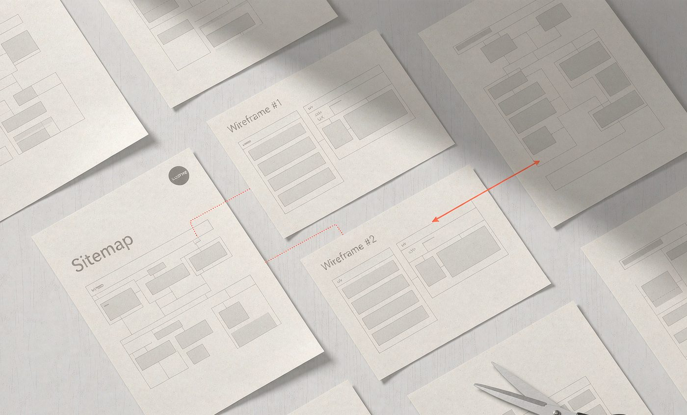

01
背景：一个「改不动」的站
接手的时候，站点已经在线上跑了几年。表面上看还行， 真正开始改才发现问题都埋在里面：十几个插件互相咬合， 页面内容一半是编辑器写的、一半是短代码拼的， 样式靠主题设置面板堆出来。
- 改一个栏目的排版，会连带影响另外三个页面
- 同一个按钮在六个页面里有六套写法，颜色各不相同
- 新同事想改段文字，得先问「这一块是哪个插件生成的」
- 加一个新页面的成本，接近重新做一个站
最贵的不是做一次改版，是每次改版都要重来一遍。
旧站插件堆叠、模板散落，改一处崩一处。 这次不做「再改一版」，而是把页面结构交还给原生模板体系， 让后面每一次修改都不用推倒重来。
接手的时候，站点已经在线上跑了几年。表面上看还行， 真正开始改才发现问题都埋在里面：十几个插件互相咬合， 页面内容一半是编辑器写的、一半是短代码拼的， 样式靠主题设置面板堆出来。
最贵的不是做一次改版，是每次改版都要重来一遍。
所以这次的目标不是「做得更好看」，而是让这个站能被长期改下去。 三条硬指标：
页面结构由原生模板承载，不再依赖 inline 写法和短代码拼接。
新增一个栏目页，不需要重新设计，套模板即可。
SEO 字段、URL 结构、图片规格统一，不留人工判断空间。
顺序很重要。先定结构再定视觉，先定令牌再做页面—— 反过来做，后面一定返工。

过程里有两处，我最初的想法是错的，后来推翻了。
改主意的原因很简单：inline 写法短期最省事，长期最贵。 它把「这个按钮长什么样」散落在几十个文件里， 半年后连自己都不敢动。
以下数字待替换为真实数据。
主官网自然流量同比翻倍（点击 1.41 万 → 4.63 万）
年度自然搜索曝光（2024，上年 73 万）
同体系官网 / 独立站完成搭建或迁移
这次让我彻底改掉了「先做出来再整理」的习惯。 在受限的环境里（服务器配置不高、不能随便装插件）， 把规则定在前面，比把功能堆在前面重要得多。